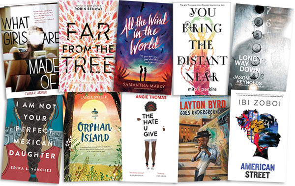

Giải thưởng Sách quốc gia Mỹ cho văn học trẻ công bố vòng sơ khảo
Ngày đăng 10/11/2017
Mới đây, quỹ Sách quốc gia Mỹ đã công bố 10 cuốn sách trong hạng mục văn học trẻ được lựa chọn để tranh cử cho giải thưởng cao quý của quốc gia này. Giai thuong Sach quoc gia My cho van hoc tre cong bo vong so khao hinh anh 1 Các tác phẩm lọt vào vòng sơ khảo giải Sách quốc gia Mỹ cho văn học trẻ 2017. Các tác phẩm được lựa chọn đều mang những nội dung không quá mới như tình yêu trẻ tuổi, tình cảm gia đình hay theo đuổi giấc mơ nhưng tất cả đều không hề khiến độc giả thất vọng. Trong đó, hai trong số 10 cuốn sách năm nay, Long Way Down và The Hate U Give, đề cập đến vấn đề những người trẻ tuổi phải đối mặt với bạo lực và lẽ phải mà họ theo đuổi. Cho dù là được viết bởi các tác giả kỳ cựu hay những gương mặt mới thì 10 cuốn sách đều được đánh giá cao cả về nội dung lẫn hình thức. Danh sách vòng sơ khảo năm nay bao gồm hai nhà văn đã từng được đề cử cho giải thưởng Sách quốc gia Mỹ là Jason Reynolds và Rita Williams-Garcia, 8 gương mặt còn lại đều là lần đầu tiên góp mặt trong giải thưởng danh giá này. Giải thưởng Sách quốc gia Mỹ cho văn học trẻ là một trong bốn giải thưởng của Quỹ Sách quốc gia trao cho các tác phẩm văn học được sáng tác bởi công dân Mỹ. Giai thuong Sach quoc gia My cho van hoc tre cong bo vong so khao hinh anh 2 Một số cuốn sách nổi tiếng từng giành giải thưởng Sách quốc gia Mỹ cho văn học trẻ. Đây cũng là giải thưởng từng vinh danh các cuốn sách được yêu thích như Nhật ký hoàn toàn có thật của một người Anh-điêng bán thời gian của Sherman Alexie, Lũ trẻ nhà Penderwicks của Jeanne Birdsall, Inside Out and Back Again của tác giả người Mỹ gốc Việt Lại Thanh Hà. Vòng chung khảo năm nay sẽ được công bố vào ngày 4/10, và người chiến thắng sẽ được xướng tên vào ngày 15/11. Số tiền thưởng của giải Sách quốc gia lên đến 10.000 đô la Mỹ (tương đương 227 triệu đồng). Danh sách các tác phẩm được đề cử giải thưởng Sách quốc gia Mỹ cho văn học trẻ 2017. 1. What Girls Are Made Of - Elana K. Arnold 2. Far from the Tree - Robin Benway 3. All the Wind in the World - Samantha Mabry 4. You Bring the Distant Near - Mitali Perkins 5. Long Way Down - Jason Reynolds 6. I Am Not Your Perfect Mexican Daughter - Erika L. Sánchez 7. Orphan Island - Laurel Snyder 8. The Hate U Give - Angie Thomas 9. Clayton Byrd Goes Underground - Rita Williams-Garcia 10. American Street - Ibi Zoboi
Nguồn Zing